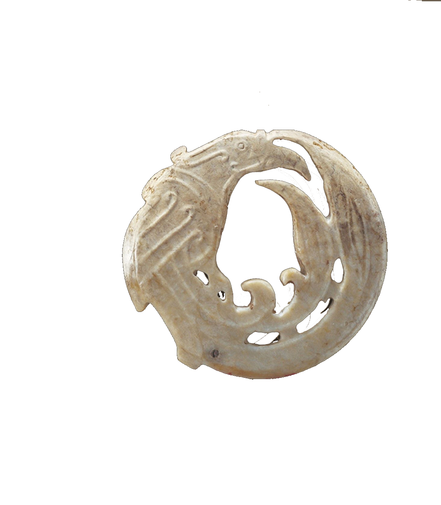
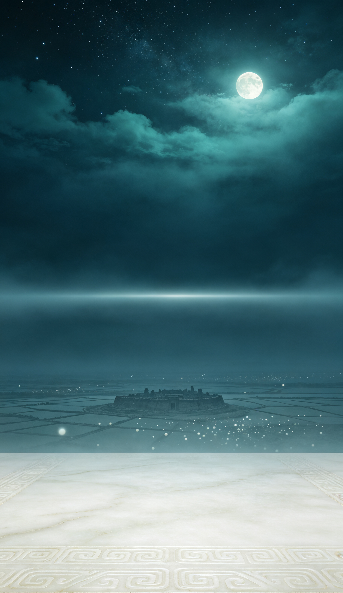
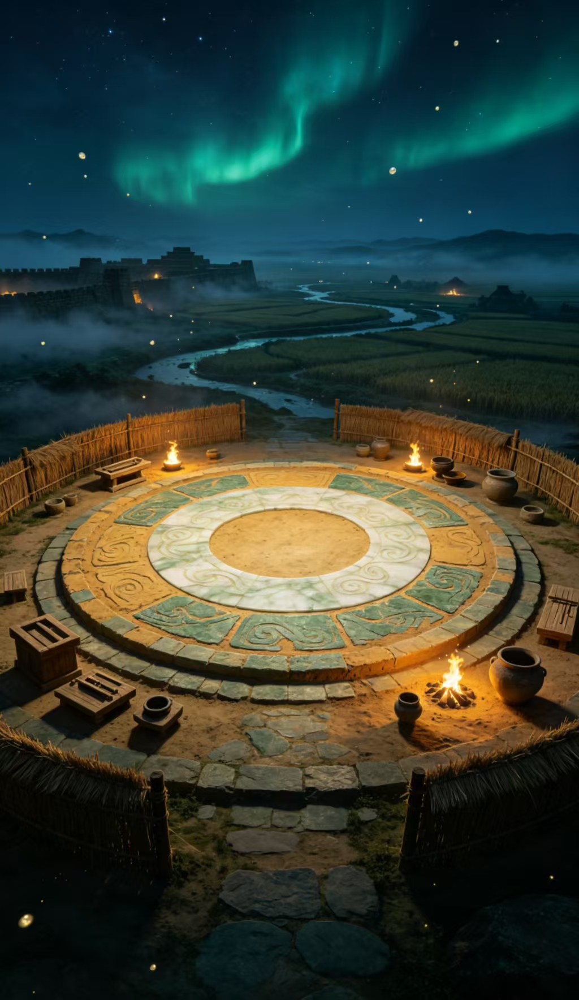
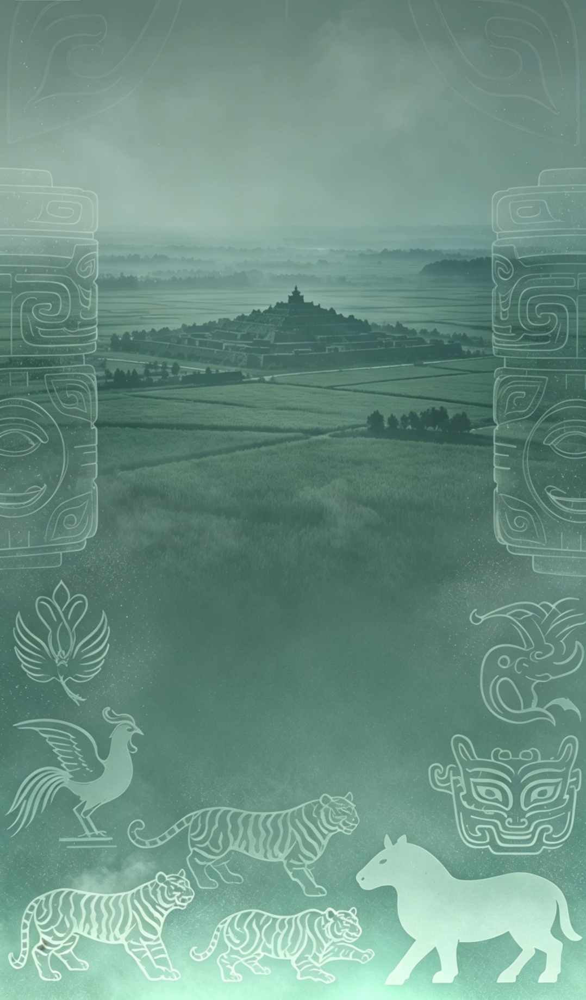
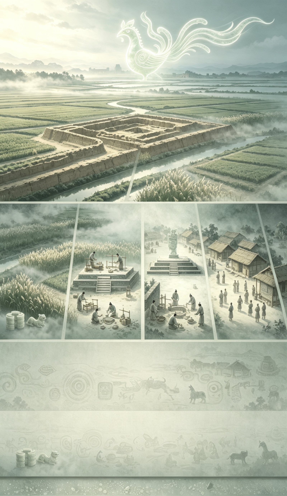
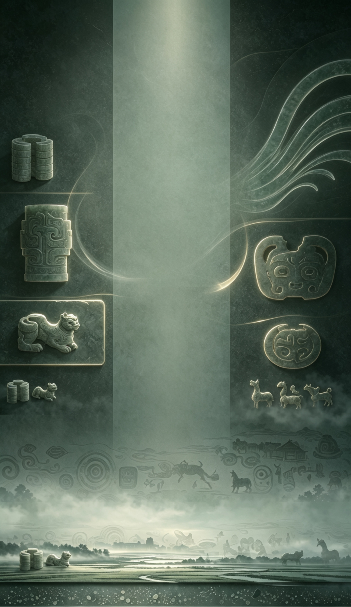

📜 探索成果海报
长按海报可保存或分享给朋友
选择纹样：
选择玉器底版：
保存/分享功能将在部署后启用

探索千年玉文化之旅
石家河遗址 · 距今约4500年
长江中游璀璨的史前玉器文明
轻触屏幕 · 开启时空之门


沉睡四千五百年的玉魂
在凤鸣声中缓缓苏醒
石家河的先民以玉通神
将天地的灵气凝于方寸之间
✦ 轻触玉凤 · 开启旅程 ✦

左右滑动 · 追溯石家河千年

轻触光点 · 唤醒沉睡的玉器

拖拽碎片 · 复原千年文物

徐徐展开 · 石家河文明画卷
文明起源
约公元前2600年 · 江汉平原文明的曙光
琢玉工艺
切割 · 钻孔 · 打磨 · 抛光，方寸之间见乾坤
祭祀场景
以玉通神 · 巫师起舞，祈求风调雨顺
日常生活
种植水稻 · 饲养家畜 · 聚族而居的田园画卷
玉凤腾飞
凤鸟展翅 · 四千五百年的文明回响

石家河文明探索之旅 · 圆满收官
📜 我的收藏卡
石家河玉语 © 文化遗产数字传承